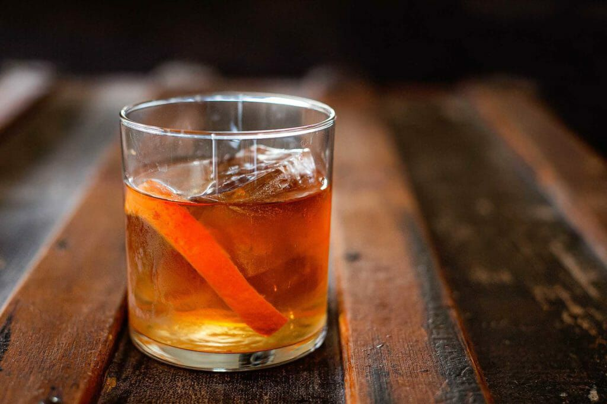

Old Fashioned Cocktail Recipe

Description
An Old Fashioned is a true classic. Made with whiskey, sugar, Angostura bitters, and an orange peel (or cherry) for garnish, it's a cocktail made for whiskey lovers!
Ingredients
- 2 ounces bourbon or rye whiskey
- 1/4 ounce simple syrup
- 2 dashes Angostura bitters
- Orange peel or Luxardo cherry, for garnish (optional)
Steps
- Add syrup and bitters to a rocks glass
- Fill the glass with ice and stir
- Add bourbon or rye and stir for about 30 seconds
- Garnish with orange peel or Luxardo cherry
- Enjoy!